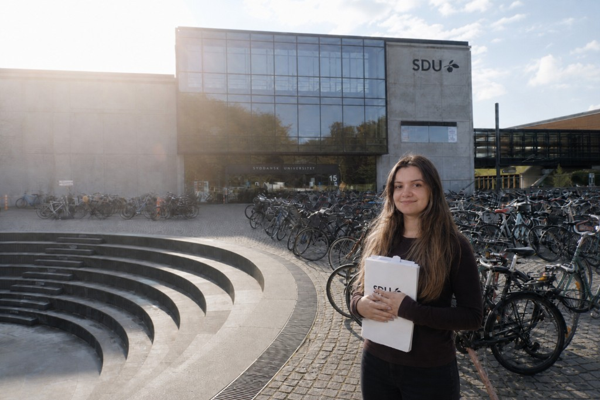
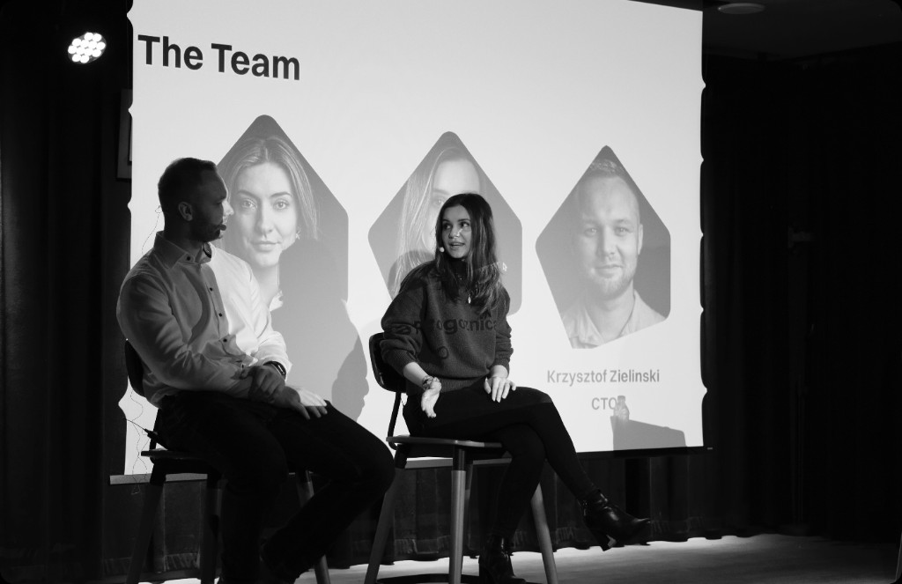

CV
Profile
With 7+ years of experience in digital design, I thrive in agile work environments where the user is prioritized and collaboration is key. I have a track record of elevating user experiences through visual consistency, user advocacy and stakeholder involvement.
Design Education in Scandinavia
As a big lover of Scandinavian Design at 18 years old I moved to pursue design studies in Denmark

-
MSc in IT Product Design
2020 - 2022University of Southern Denmark
Denmark
-
Digital Design
2015 - 2018University College Lillebælt
Denmark
Work Experience
-
Lead Product Designer 2024 - 2026
Nabogo ApS · carpooling, web / iOS / Android
Full-time · Scale-up
Led UX strategy across three platforms: new onboarding, a design system built from scratch, and mentoring a junior designer and a student.
- 1.5x Activation, DK
- ~2x Fewer components
- −50% Journey complexity
-
UX / UI Designer 2022 - 2024
University of Southern Denmark · employee intranet
Full-time · University
Designed and coordinated a new staff intranet through stakeholder workshops, interviews, usability testing, Figma prototyping, and close collaboration with development.
- −50% Fewer pages
- 300+ Stakeholders
Entrepreneurship

-
Lead Product Designer
2022 - 2024Rotoy ApS, EdTech startup · part-time as side project
- Led a website re-design with a bolder visual identity and new shopping experience that generated 2x more conversions.
- Iterated on prototypes in close collaboration with developers and mentoring student workers.
- Built strong relationships with teachers and parents to enable user testing with children, gather product feedback, and support meaningful collaborations.
Skills & Tools
Skills
Proficient tools
Working knowledge
Languages
-
English Fluent
Cambridge Advanced English (C1) Examination
-
French Upper Intermediate
-
Danish Upper Intermediate
-
Romanian Native
Certifications
-
Customer Journey Management
Oct 2024Nielsen Norman Group
Credential ID 1089743
-
Project Management - Leading and facilitating project processes in big organisations (2 ECTS)
Nov 2023Syddansk Universitet - University of Southern Denmark
Skills: Conflict Resolution, Project Management
-
Conducting Usability Testing
Sep 2023IxDF - Interaction Design Foundation
Credential ID 144226-2023-949950
-
Data-Driven Design: Quantitative Research for UX
Aug 2023IxDF - Interaction Design Foundation
Credential ID 144226 · Skills: A/B Testing, Quantitative Research